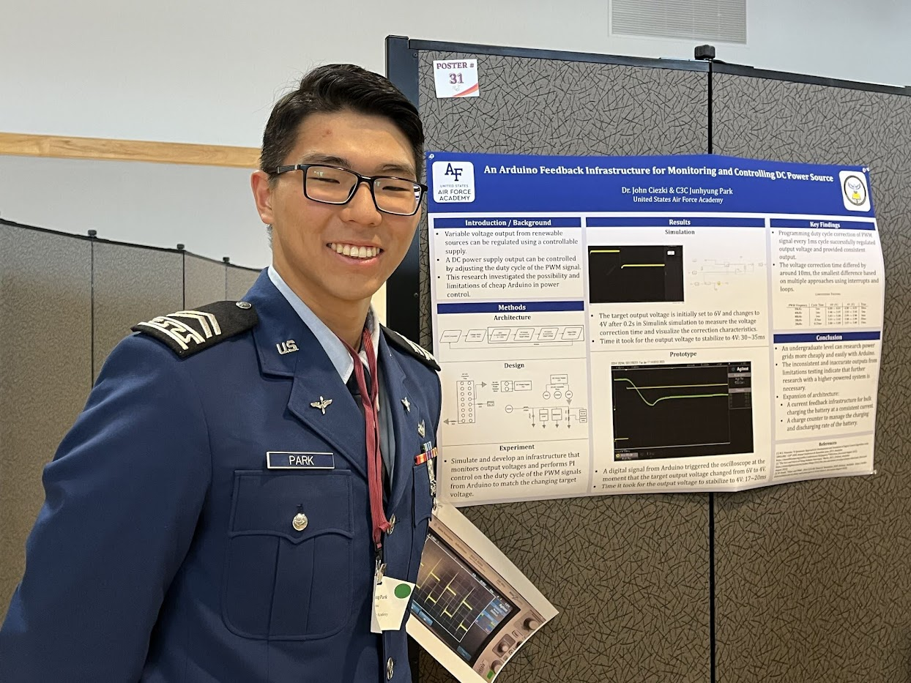
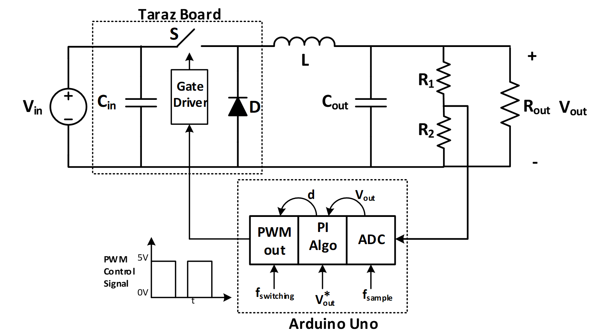
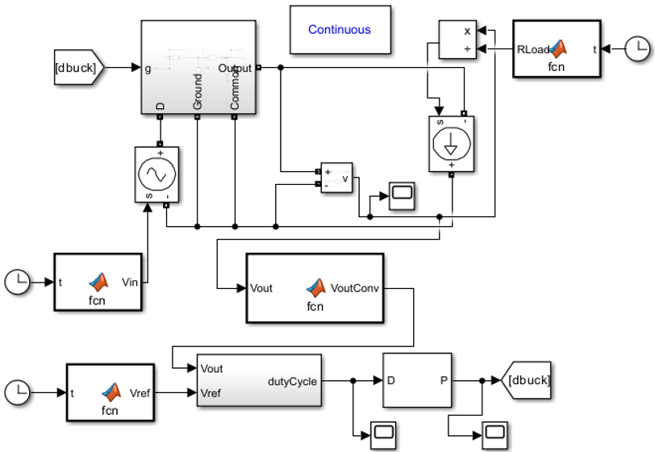

Power Research
(2022 - Present)

"AN ARDUINO FEEDBACK ARCHITECTURE FOR MONITORING AND CONTROLLING DC POWER SOURCE"
Abstract
Rapid prototyping systems to perform feedback
controls are expensive and impractical. Other alternatives like
analog controllers and waveform generators also take time for
their difficulties for tuning. Thus, this research explores the limits
of configuring and using Arduino for doing power electronics
research. As a result, Arduino was able to fulfill feedback control
accurately under certain settings. However, Arduino provided
inaccurate results outside of those settings due to its hardware
limitations.
Background
In the academic environment, the development of power
electronics systems is frequently slowed by the design and
implementation of feedback controls. There are several attrac-
tive hardware-in-the-loop rapid prototyping systems, such as
dSpace or Speedgoat, but these systems are expensive and
impractical for a system that must be deployed or be compact.
Alternatives include analog controllers which employ some
combination of PWM (Pulse Width Modulation) integrated
circuit chip or custom waveform generator and comparator,
and passive components wrapped around op amps. This is a
productive venture, but it generally takes significant time to
fabricate and is generally more difficult to quickly tune its op-
eration. Digital control is typically more compact and software
adjustable, but it requires greater confidence in coding and
experience with embedded systems generally. This research
explores the limits of configuring and using a hobbyist-style
microcontroller for doing power electronics research. The
ultimate goal is to assemble a DC power electronics microgrid
and study energy management issues. Central to this endeavor
is developing a capable controller that students can deploy
rapidly with some success.
Prototype and Simulation
GitHub


After prototyping and experimenting with Arduino and Taraz DC-DC Buck Converter, we used MATLAB's Simulink tool to verify the result.
Poster
Presented at:
- USAFA Cadet Summer Research Program (CSRP) Presentation
- 2023 Western Regional Honors Conference (WRHC) at University of Montana
PUBLICATION
IN PROGRESS for Institute of Electrical and Electronics Engineers (IEEE) and American Society for Engineering Education (ASEE)